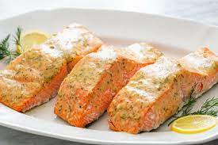

Easy Salmon

Decription
This is an incredibly easy weeknight dish with delicious results. The flavors of mustard and brown sugar go so well with Salmon, I have a hard time making it any other way.
This recipe is for the oven, but it can easily be made on the grill if that is your preference. Happy Cooking!
Ingredients
- Salmon filets
- Dijon mustard - 1/2 tsp per fillet
- Brown Sugar - 1/4 tsp per fillet
- Salt and Pepper to taste
Steps
- Heat oven to 400 degrees
- In a small bowl, mix enough dijon mustard and brown sugar for the # of fillets cooking
- Prepare a baking sheet with foil and lightly oil the foil
- Place fillets skin side down on prepared baking sheet, and season with salt and pepper
- Spoon the mustard mixture onto the top of the salmon.
- Roast in the oven for 10 minutes.
- Broil for 2 minutes to brown (optional)